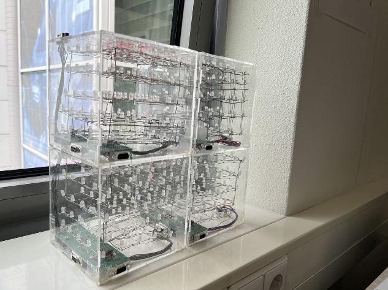

ALTEN is a global consultancy company originating from France. Within 30 years, ALTEN has become leader in both outsourced Engineering and R&D and IT Services with more than 37,000 engineers in nearly 30 countries. ALTEN is active in a wide variaty of sectors, including but not limited to Aeronautics, Space, Defense, Energy and Banking.
Product
ALTEN's most important product is its people. Technical competence is the reason customers have been satisfied with ALTEN engineers for over 30 years. To demonstrate the excellent learning environment of ALTEN the Sound2Show project was created. The project is meant to be used at expositions or demonstrations for potentional future customers.
Assignment
Situation
ALTEN has 2 choices for students willing to graduate: pick an off the shelf project and improve upon it, or define a new project. The Sound2show project is a mix of both. It utilises the already made LEDCubes project as a way to output light, and will create the audio analysis part from scratch.
Task
The primary task of the Sound2Show project is to create an implementation which can analyse audio in real-time. To achieve this feat, a project written in C and C++ is created with performance in mind. The secondary task of the Sound2Show project is to format the analysis data and deliver it to the LEDCubes project to enable a lightshow to be created.

Action
To source the audio data for the analysis an audio sampler had to be created. It is important that the audio quality is as high as possible, since higher quality audio will result in a higher quality analysis. To achieve the highest audio quality possible, an implementation was written that samples audio data directly from the soundcard of the laptop on which the laptop runs. To analyse this audio data, a Fast Fourier Transformation (FFT) algorithm was created. This algorithm accuratly divides audio data in its frequencies, which is then used to create a lightshow. Lastly a bridge implementation was created in order to format the analysis data in a way that was optimal for the LEDCubes project. The data was then send over WiFi to the LEDCubes project.
Result
The resulting Sound2Show project is fit to analyse any genre of music. This is quite a feat, since most audio analysis software struggles with fringe types of music like classical or jazz. This was achieved by building a dynamic FFT algorithm from scratch. New insight was also gained into the LEDCubes project, which was documented for potentional future projects. The project was eventually graded with a 10/10, resulting in a Cum Laude graduation.
Tools and Methods
Programming Languages
The Sound2Show project was largely coded in C++. This language was choosen for its high performance which is crucial in audio analysis. The audio sourcing was programmed in C since it deals with the soundcard directly. The LEDCubes project was already written in Lua, which was then documented.
Development Methods
The project was developed using Agile Scrum. Peer reviews were also used to ensure high code quality, since the graduate had not programmed in either C or C++ before.